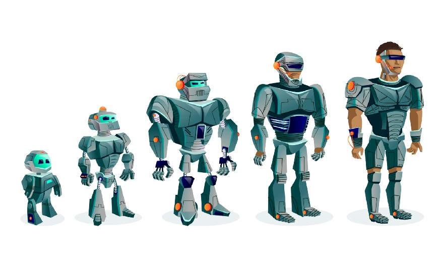

What is Cyborgs? The Next step of Human Evolution
Cyborgs are cybernetic organisms which means they are a mixture of machines and living organisms. The word cyborg is a portmanteau of two words, cyb: meaning cybernetic and org: meaning organism.
Cyborgs may include extra hardware or software or a combination of both. Some can even be remotely controlled by the mind. Humans will become cyborgs because of the exponential growth in technology over the next decade.
Cyborgs are a common theme in science fiction where humans can either choose to become cyborgs, or they can be ‘cybernetically enhanced’ — usually at the cost of their free will. But what is a cyborg? How does it differ from an android or robot? And could we ever see humans becoming cyborgs? we will tell you.
In the book “It’s Alive” by Kevin Warwick claims that humans already are cyborgs because of technology including computers, mobile phones, and implants like pacemakers. Cyborgs also extend to the brain, which is an essential part of the body. Brain-computer interfaces involve by-products similar to those in big earphones or hearing aids. Therefore they are brought into the category of cyborgs.
Imagine if humans could receive messages and transmit signals through their brains? What would life be like if humans were empowered with super senses such as infrared (thermal imaging), dizzying speed, or even the ability to influence others brain in a mere 100 feet. The concept of a cyborg has been around for many decades but has come under discussion recently with the invention of technology such as enhanced auto-focus lenses and wireless connectivity. In fiction, a cyborg is a cybernetic organism. In reality, a cyborg is an organism with both organic and biomechatronic body parts. And the future will make no difference whatsoever.
How Humans will become cyborgs?
Humans can become cyborgs by adding a new body part into their body if they are able to control the new part by the brain and also the part can transmit the information to the bain of touching and other senses. It means if the new body part can process input signals and able to transmit output then the person will be a Cyborg.
For example, we can remove any type of physical disability in Humans, and also we can become efficient by adding extra body parts maybe four legs or three hands, or maybe a Third eye so that we can see what is happening behind us.
Professor Kevin Warwick of Reading University FRS has successfully demonstrated that modern medical procedures to implant electrodes in patients can be used to create cyborgs by linking their nervous systems directly to computers. Cyborgs are individuals whose physiological states can be controlled or sensed by means of implanted electronic devices. Prof. Warwick’s research could lead to improvements for people with mobility problems as well as the elderly and allow them to be cared for by superintelligent robots. The research has prompted a call from other scientists for a moratorium on the implantation of microchips in patients until there is more public debate about its potential risks and benefits.
According to some Intellectuals, Humans have already become Cyborgs because We have a neural link to the internet via our phones. We wear glasses that can tell us what’s on the screen in front of us. We have computers in our pockets, on our wrists, and even in our own homes telling us when our laundry is done. This technology has become so normal, we rarely question it — yet for all intents and purposes, we are becoming cyborgs. It’s time to start asking why we are doing this and how bad it can get.
Where we are Heading?
We know how Humans evolved by the time from Dryopithecus to Homo Erectus to Homo Sapiens, we evolved because of our understanding of the brain and things around us increased and also because of the technology around us. The next step is Human will become Cyborgs by adding new body parts and pushing the limits of what humans can do. Maybe humans would be able to fly by wings and also sense those wings.
In the future humans will become cyborgs and robots will be man’s friends. We would not be able to control the machines in the future, there will be complications in the human body and many psychological disorders will arise because of this. It also leads to the problem of war. But researchers are developing an easy way to control these systems, where humans could control them by giving a thought or voice order. A human would not have any work related to machines; all things will be done by machines. Friendly robots will help us in the future. It is very unlikely that humans can defeat robots with guns and knives but they still can control them physically or mentally with their mind or voice commands.
Think about what if we will be able to replace all our body parts with microprocessors/Robots except the brain then, is it possible for Humans to become immortal?. The answer is YES it is possible if we are that much technologically advanced.
This is all about the future for now the world is suffering from Covid-19 (Novel Coronavirus). It is already November 2020 and it's been almost a year since this virus came and we still do not have a single vaccine that can cure it. So for now Wear Masks, Keep sanitizing your hands and Stay Safe.
Thanks for reading.
About the Author :

Ashish Jagrawal
I'm a Programmer, Designer, and is ardent about physics, and always curious about everything that I saw. Trying to push myself to the limits.
Find this blog helpful? then share it with your contacts and if you find any error or mistake then do mail us Click here.